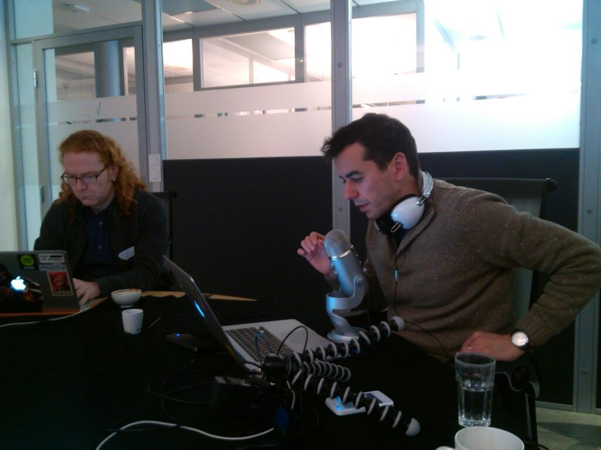
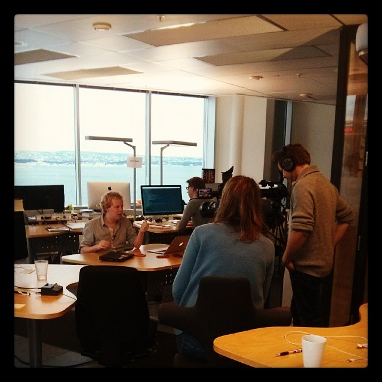

我們接下來將透過一系列短片，為開發者說明該如何著手設計自己的第一個 Open Web App，並針對 Firefox OS 進行開發。

每部短片均極為精簡扼要，讓你在短暫的休息時間也能觀賞，一口氣看完整個系列也不會超過一個小時。此系列短片是由 Telenor Digital 的 Jan Jongboom (@janjongboom) 與 Sergi Mansilla (@sergimansilla)，以及 Mozilla 的 Chris Heilmann (@codepo8) 於 2014 年 2 月所錄製。地點位於挪威首都奧斯陸的 Telenor Digital 辦公室內。
接著為大家簡述本系列短片的內容：
Firefox OS 就是要將 Web 帶入行動裝置的作業系統。但 Firefox OS 並非用新技術或新開發環境所建構，卻是以行之有年的標準 Web 技術所打造而成。如果你就是 Web 開發者並打算設計行動 App，則不需改變自己熟悉的流程，也不用重頭學習新的開發環境，即可立刻享受 Firefox OS 所帶來的便利。在此系列短片中，Mozilla 與 Telenor 的開發者相聚在奧斯陸，一同向大家解釋該如何著手建構 Firefox OS 的 App。你將了解：
- 如何開發自己的第一個Firefox OS 應用程式
- 如何在桌機與實際裝置上測試自己的 App 並除錯
- 如何將 App 提交到 Marketplace 中
- 如何使用 API 與 Firefox OS 針對 JavaScript 開發者所提供的特殊介面，進而存取智慧型手機的硬體
除了系列短片之外，你也能從 GitHub 下載範例程式碼。如果要親自體驗範例程式碼，需另外設定簡單的開發環境。必備條件如下：
- 最新版本的 Firefox (內含現成的開發工具) ─ 如果你真的要把玩最新技術，那我們建議可下載 Firefox Aurora 或 Nightly 版本
- 文字編輯器 ─ 短片中使用了 Sublime Text，但其實任何文字編輯器均可。如果你想直接在 Web 上編輯程式，則可嘗試 Adobe Brackets
- 可供你推播自己 Demo 檔案的伺服器。某些展示用 App 需要 HTTP 連線，而不適用本地伺服器

而後續系列短片將涵蓋下列主題：
- 好的 HTML5 App 之構成要素？ – Wrapper 中不單單是網站而已
- App 的 Manifest 檔案 ─ 透過簡單的 JSON 物件，將網頁轉為 App
- 應用程式管理員 ( App manager ) 與 Firefox OS 模擬器 (Firefox OS S imulator ) ─ 看看 App 在 Firefox OS 裝置上所呈現的樣子，並了解 App 封裝格式
- 用實際裝置測試 ─ 如何將手機接上電腦，並進行 App 遠端除錯
- 發佈至 Marketplace ─ 如何讓 App 上架，並使消費者能透過 Web 與自己的裝置看到 App
- Web API ─ 如何透過 JavaScript 存取 Firefox OS 裝置上的硬體
- Web Activities ─ 如何在裝置上建構 App 生態系統，並依自己需要而利用其他 App 的功能
- 推播通知 ─ 當發生新的資訊，應如何於遠端喚醒 App
- 了解更多 – 和我們聯繫並取得更多資源
除了影片之外，你也能到系列影片的 Wiki 頁面取得相關資訊與連結。請隨時回來查看是否有新的連結，或在 Twitter 上追蹤 @mozhacks 以獲得新發佈短片的相關資訊。

在本系列短片發佈完畢之後，我們會再統整到 Wiki 頁面上。Telenor 也正努力為系列短片配上不同語言。敬請隨時注意相關訊息。
另外感謝 Telenor 公司的 Sergi、Jan、Jakob、Ketil、Nathalie、Anne 等人鼎力協助。
原文連結：App basics for Firefox OS – a screencast series to get you started